Shimomura Mieruka ProjectSMK Project
SMK PROJECTは「最高品質は、最高の環境で生まれる。」というシモムラの想いをカタチにする取り組みです。2009年に「基盤活動の活性化」「業績貢献」「ブランドの高度化」を目的に、業務改善と成果を見える化させるモノづくり運用システムを一新。ひたむきな向上心と進化するための実行力で、お客様のニーズに応える最高品質を届けていきます。

シモムラでは全工場入口において、組織で取り組むべき「品質・安全・環境・生産」をテーマに掲げたシンボルコーナーを設けています。そのテーマに関する基本原則や目標、取り組み内容等を一番目のつく場所に掲示し、全所員だけでなく外部の人でもシモムラの目指すべき姿を理解できるシステムです。品質管理・リスク管理・環境管理・生産管理を柱とした見える化は、情報共有徹底と良質で安全な製品づくりに役立てられています。

シモムラの工場内は、一直線に伸びる通路の脇に、設備や納品前の製品が整然と配置されています。さらに所員全員が常に整理整頓を心がけ、汚れやゴミを徹底的になくすように努めています。これは、製造の過程で発生する不具合にいち早く対応し、製品を高品質に保つため、また労働環境を常に清潔に整えることで、所員のモチベーションを保つというシモムラの方針です。工場の一角には、所員が憩える庭園を設けており、様々な労働環境向上への取り組みを最高品質のモノづくりにつなげています。

現場の“声”をモノづくりに反映する手段として、各生産ラインにSMKコーナーを設置しています。ラインごとに作業の改善点や、目標、効果などを記入し、振り返ることで生産活動の質を向上させています。見える化をベースとした課題解決が標準化され、コミュニケーションの向上、思いこみ・慣れの排除、社員の負荷低減を実現するだけでなく、作業を円滑に進めることになるなど、あらゆる工程のレベルアップを継続的に図っています。

熟練技術の会得を志す若手技能者は、素材の目利きや設備の効率的な使い方など、「匠」の域に達している先輩社員から直接指導を受けたり、時には技を盗んだりと常に切磋琢磨し続けています。シモムラでは若手技能者のレベルアップを早期に促すためのツールとして、熟練技術を映像で可視化するビジュアルマニュアルを採用。動画を活用することで、言葉で伝えづらい繊細な手技をわかりやすく伝えています。